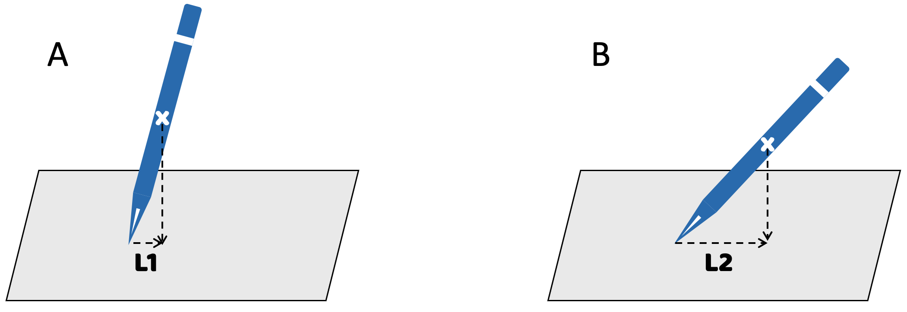
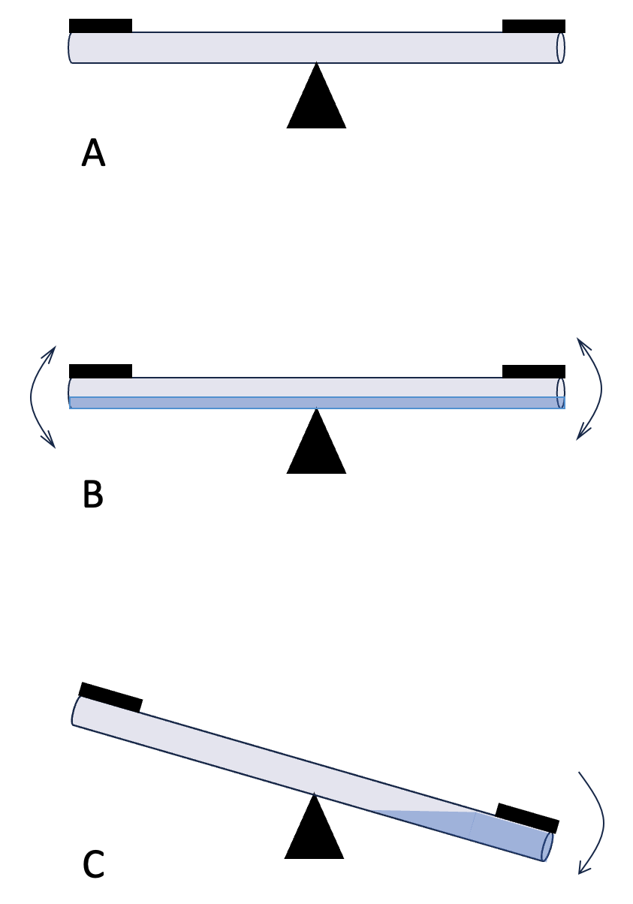
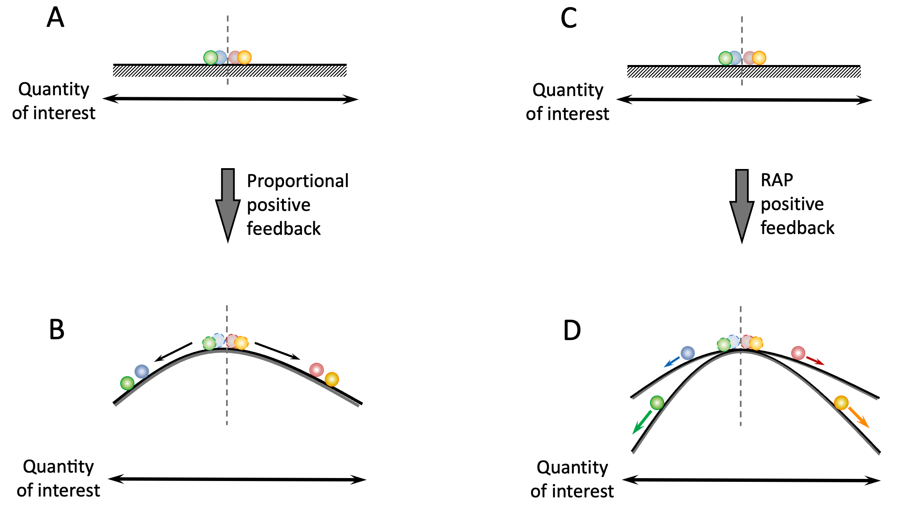
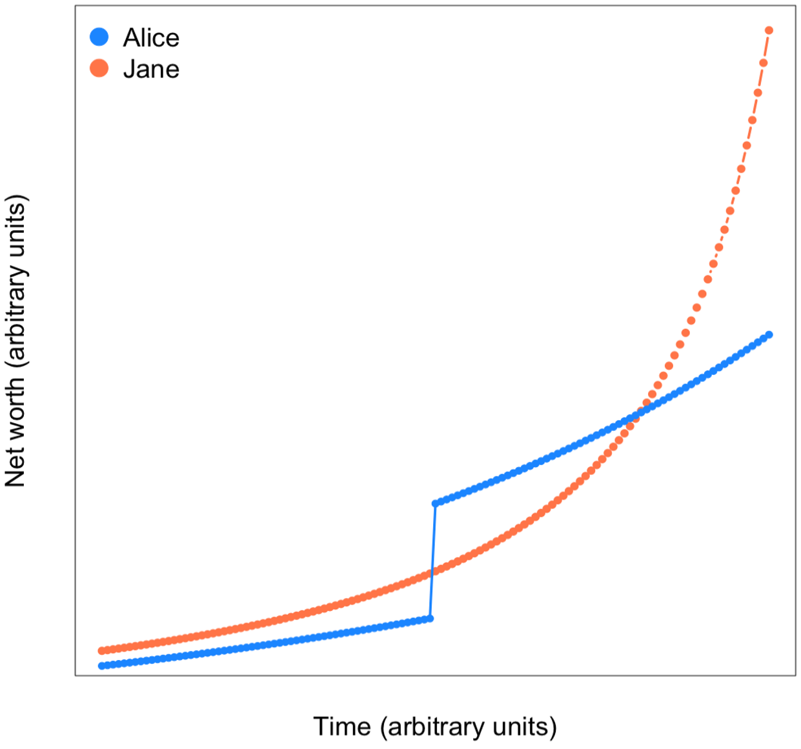
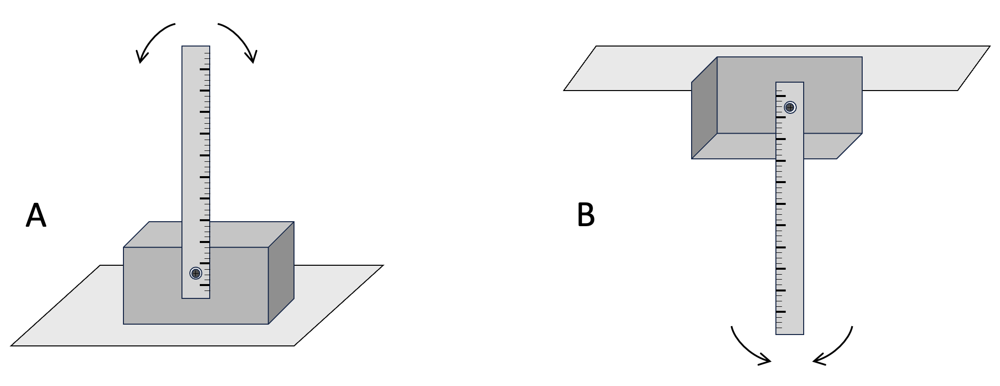
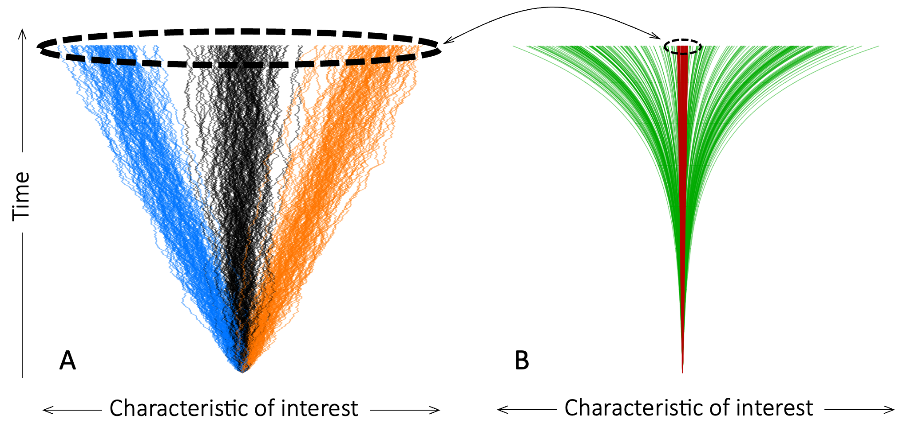

3 How the Invisible Hands of Feedback Create Loaded Dice
As we saw in Chapter 2, negative feedback loops create stable steady states that a system is “drawn towards”, like a ball rolling to the bottom of a bowl. In contrast, positive feedback loops create unstable steady states that “repel” the system away, akin to a ball placed atop an overturned curved-bottom bowl 14. In effect, positive feedback loops amplify deviations away from their unstable steady state.
Imagine a ball placed atop a horse-saddle. The saddle peak is an unstable steady state for the ball. If the ball is pushed even a tiny bit to either side of the saddle peak, it will roll away down that side. And the further the ball rolls down the side, the more work it will take to move the ball back to the top. If the ball could think and feel, it would probably feel manipulated. But there is no puppeteer pulling the strings behind the scene, no Wizard of Oz, etc. Just random noise in position of the ball getting amplified by positive feedback.
If you want to get personal experience of how hard it is to fight against a positive feedback loop, try maintaining a pen in an upright position with its tip on your index finger (see Figure 3.1). You might be able to do this for a few seconds by moving your hand back and forth, and left-right. But it is a losing battle. Any time the pen leans even slightly to one side, its center of gravity will move to that side of where its tip sits on your finger, creating a force that moves the pen further in that direction (see Figure 3.2 for more details). With practice, you may be able to compensate for the movements of the pen and keep it upright, but not for long!
Figure 3.1. The pen balancing challenge. How long can you keep the pen vertical?

Figure 3.2. Positive feedback acting on a pen, initially balanced on its tip. A. If the pen’s center of gravity is not exactly above its point, then it will act like a lever with the pen’s tip as the fulcrum. B. The more the pen leans over, the stronger the torque exerted by its weight (because L2 > L1), creating a positive feedback loop. If the tip of the pen is sharp, then the probability that we can position the pen’s center of gravity sits exactly above its resting-point will be negligible, making the vertical position an unstable state.
3.1 Runaway Polarization Creates Rigged Systems
To see the correspondence between unstable steady states and polarization more clearly, consider the see-saw in Figure 3.3. A typical see-saw (panel A) is basically a long beam resting on a fulcrum at its center. Children sitting at the two ends of the beam take turns to push their end of the beam upwards, but an empty see-saw will remain motionless in whatever position it happens to be in. It has no “preferred” resting position.
Now, suppose the see-saw’s central beam is a hollow tube into which we pour a little water. If the beam is perfectly horizontal, the water will distribute evenly along the length of the beam, as in panel B. With the beam perfectly horizontal, the two sides of the see-saw will have equal amounts of water, and the see-saw will remain horizontal. But the horizontal position is now an unstable steady state. The slightest up-down rotation of the beam will cause all the water to run to the lower end. As it does so, the weight of the water will make the lower arm of the see-saw heavier than the emptying upper-arm. The more water flows to the lower arm, the more it will weigh down that arm and push it lower, until the see-saw can go no further (panel C).

Figure 3.3. A see-saw with positive feedback. A. In a normal see-saw, there are no feedback loops. The central beam of the see-saw will rotate clockwise or anti-clockwise under external forces (children sitting at either end and pushing up with their feet). If the see-saw is well-balanced, then, in the absence of external forces, the beam will remain motionless at whatever angle it happens to be in. B. Suppose we put a small amount of water inside the central beam of the see-saw (indicated in blue). If the see-saw is perfectly horizontal, the water will be distributed evenly inside the beam. But if a small force causes the beam to rotate even a tiny bit, the water inside the beam will rush to the lower end, as in panel C. The shifting weight of the water creates an additional force that pushes the beam down even more strongly. Once such a move has started, stopping it requires a force greater than the weight of the water.
Adding water to the see-saw’s central beam creates a self-reinforcing positive feedback loop that makes the see-saw predisposed to have one seat all the way up and the other seat all the way down. This is what positive feedback loops do. They make it easier to keep moving in the direction of further polarization; and they resist any move back towards the middle ground.
Now, imagine an array of water-logged see-saws, each with one side slightly higher. The children on these see-saws will feel an invisible force (the weight of the water) lifting or lowering them. More generally, when positive feedback is applied to members of a population – e.g. people earning compound-interest on their retirement accounts – it creates uneven playing fields that slope downwards away from the unstable steady state (see illustration in Figure 3.4A, B). People on different sides of an unstable steady state (e.g. people with positive and negative savings-account balances) will feel the force of the positive feedback loop as a bias in the system through which small initial (or inherited) differences among the population-members are amplified.

Figure 3.4. How polarization creates uneven playing fields. A and C. Hypothetical distribution of a quantity of interest (e.g. pro/anti-abortion sentiment) among four people (represented by colored balls) before the onset of polarization. The dashed vertical line indicates a neutral position. In the absence of polarization, the individuals are like balls resting on a flat surface. B. The same quantity and people as in (A) sometime after the onset of simple (linear) polarization. The effect of such feedback is analogous to changing the surface under the balls into a hill with a peak located at the neutral value (unstable steady state). The balls representing the individuals on either side of the hill will roll downhill in opposite directions, as indicated by the arrows. Light and dark colored balls show the before and after positions of the individuals. D. Under RAP, people further from the neutral value receive stronger positive feedback, analogous to being on a more steep hill. Accordingly they move away exponentially from people on their side of the divide who happen to start with less.
The greater-than-proportional positive feedback loops that create Runaway Polarization, introduce an additional bias: For people starting with different values at the start – even when they are on the same side of the unstable steady state – the playing field is uneven to different degrees. This situation is illustrated in Figure 3.4C, D, and is essentially because under RAP people are subject to different feedback rates (e.g. savings interest rates). The upshot of this is that, under RAP, even for people on the same side of a polarizing field, the playing field is not level. For example, if the polarization is in wealth, two people who are both on the winning side and getting richer, will be getting richer at different rates. In absolute terms, they are both getting richer, but in relative terms, one person is getting richer and richer. The other person is increasingly falling behind, unable to keep up, and feeling like the system is rigged against them.
3.2 The Futility of Hand-Outs Under RAP
There are three ways in which interventions that temporarily improve a person’s relative standing (a hand up, or a hand-out) will not have a lasting effect in the presence of RAP-inducing positive feedback. First, once polarization has taken hold, it is difficult to change sides. As an example, consider the water-logged see-saw in Figure 3.2C. If we force the lower end of the see-saw up partway to horizontal and then let go, it will simply go back down to where it was. This is because partially raising one end of the see-saw in this way leaves the underlying positive feedback loop intact. It is analogous to pushing a ball partway up the hill in Figure 3.3B. The ball will simply roll back down as soon as we let go. To have a lasting effect, we need to either push the see-saw/ball all the way to the other side of the unstable steady state, or remove/counteract the positive feedback loop (e.g. by draining the water from the see-saw).
The second way in which hand-outs fail to counter RAP in the long term is more subtle. Under simple polarization, relative positions do not change, so if you give somebody a hand up (e.g. to help them catch up with others), that person’s improved standing will be lasting. In contrast, under RAP, improving a person’s relative standing alone will have only have a transient effect. To have a lasting effect, we also need to increase the feedback rate to match others. The example in Figure 3.5 illustrates this point.

Figure 3.5. One-off interventions cannot correct Runaway Polarization. As an example, consider the returns on compound interest savings accounts in which the interest rate goes up with the value of the investment (account balance). In this example, Alice invests 10% more than Jane at the start. As a result, although both accounts grow exponentially, Alice’s savings have a higher interest rate and grow faster. A cash injection (vertical portion of blue curve) makes Jane temporarily richer. But, in the long run, Jane’s savings catch-up with and then overtake Alice’s because Jane’s account has a higher growth (feedback) rate.
Finally, in some cases, gradual changes in a system with RAP-inducing nonlinear feedback can suddenly make it impossible to change a system’s state. Such sudden changes to a system’s behavior repertoire are known as tipping points, and are usually caused by changes that alter the system’s feedback loops. As an intuitive example of a tipping point imagine a metal ruler with a hole near one end, which we can use to hang the rule on a nail inserted in a wall (see Figure 3.6). Balancing the ruler vertically such that the hole and nail are at the low-end of the ruler, creates a positive feedback loop similar to those in Figures 3.1 and 3.2. This system has two stable steady states (the ruler lying horizontal on either side of the fulcrum), and one unstable steady-state (with ruler in the vertical position, as shown). On the other hand, hanging the ruler with the hole and pin at the high-end of the ruler puts the ruler’s center of gravity directly below its fulcrum (the nail), and creates a pendulum-like negative feedback loop with a single stable steady state. Simply moving the position of the fulcrum leads to two systems with very different characteristic behaviors.
Now, suppose we move the position of the hole-and-nail fulcrum of the ruler gradually from the bottom of the ruler to its top. The starting scenario will be similar to panel A of Figure 3.6, and the end scenario similar to Figure 3.6B. But something interesting happens as the fulcrum reaches the middle of the ruler. In this configuration, half the weight of the ruler is above the fulcrum and half below it. So, the center of gravity of the ruler will fall exactly on top of its fulcrum. There is no feedback, and the ruler will act like an ordinary see-saw or a pair of balances, remaining in whatever position we put it in. This central fulcrum position represents a tipping point in the ruler’s behavior. As we move the fulcrum from slightly below the center to slightly above it, the ruler’s behavior suddenly changes from an unstable regime to a stable one.

Figure 3.6. How small changes in a system can dramatically change its behavior. Panel A shows a ruler in an unstable steady state. The ruler has a hole near one end. The weight of the ruler is supported by a horizontal nail loosely inside the hole, creating a scenario analogous to Figure 3.2. In Panel B, the setup is inverted, now, the weight of the ruler is below the nail supporting it, creating a highly stable state.
Tipping points analogous to the above example also happen with more complex systems. Imagine, for example, a water-logged see-saw in which a cone-shaped pebble causes the water inside the beam to move more easily in one direction than the other (similar in the water-flow regulator in Figure 2.5). Different left-right and right-left flow-rates will cause the see-saw to move in one direction more easily, and make it more difficult to get out of that state. In the extreme case, when the flow in one direction is fully blocked, the see-saw tips over into a new regime in which it has just one stable steady state into which it will always settle. A wide variety of economic, political, and social systems are thought to be susceptible to tipping points 1–3.
3.3 Feedback Amplification of Bias
In the discussions so far in this chapter, I focused on systems with perfectly predictable (deterministic) behaviors. Human Systems always involve a certain amount of unpredictability, in which events happen with a probability less than 100 percent. I want to emphasize that the positive feedback behaviors discussed in this chapter apply equally to probabilistic systems. Figure 3.7A illustrates this point with a toy example. Here, the black lines track the trajectories of individuals taking a random step to the right or the left at each time point. The blue and ochre lines represent individuals with a 10% higher chance (i.e. a bias) of moving left or right at each step. Note how, even though the individual lines are not perfectly straight, each line is a nearly straight line. In terms of how they change over time, the ochre and blue trajectories here are comparable to total interest earnings for an account where the interest is withdrawn from the account each year (i.e. there is no accumulation of interest, and therefore no feedback).
In Figure 3.7B, the dark red lines represent the full range of all the blue, black, and ochre trajectories in panel A. The green lines are the same trajectories with added positive feedback (analogous to compound-interest). All the lines in this figure are also wobbly as in Panel (A), but the spread of the lines along the horizontal dimension is so large that the irregularities in the trajectories are mostly invisible in this plot. Note how the green lines spread exponentially away from the center over time 15. They are analogous to the compound interest account example in Figure 2.4 of the previous chapter. In short, Human Systems with feedback loops operating on probabilistic biases behave, on average, in the same way as deterministic systems with fixed rates.

Figure 3.7 The large cumulative effects of small biases. Each line shows the changes in a characteristic of interest (e.g. left-right political leaning, or religious versus atheist disposition) of a simulated individual over time. Note that the scale of the horizontal axis is different in panels A and B. A. Cumulative effects without feedback. Black lines represent individuals taking equally-likely random left/right steps at each time step. Blue and ochre lines represent individuals who step to the left (blue) or the right (ochre) with a 10% higher probability over 1000 timesteps. B. The effect of positive feedback on the trajectories shown in A. The dark red lines are the blue, black and ochre lines in (A). Green lines show the same cumulative-bias processes as in (A) but with added positive feedback on the step-size. Exactly how much positive feedback amplifies the effects of cumulative biases will depend on the strength of the feedback.
3.4 Endlessly Worsening Runaway Polarization
As we will see in the coming chapters, positive feedback-mediated polarization is a common and natural self-organizing phenomenon. The principles underlying this type of self-organization have been widely studied in various branches of science, and are widely used in engineered systems.
In RAP-inducing positive feedback loops, the feedback rate increases faster than the amount of inequality and polarization. In natural and engineered systems, such increasing feedback rates cannot continue indefinitely, they saturate 16. Saturating greater-than-linear feedback rates create sharply delineated, stable steady states 17. For example, bone-marrow stem cells can divide, and then differentiate into many different types of immune cells. The immune cells that identify, engulf, and destroy infected cells, and the immune cells that identify and destroy pathogens outside cells look and act very differently, but they are both descendants of stem cells in the bone marrow. Saturating faster-then-linear positive feedback loops ensure that differentiating descendants of bone marrow stem cells adopt the characteristics of only one immune cell type.
In their unperturbed and healthy settings such as immune cell development, growth and differentiation do not continue indefinitely. Rather, polarization is constrained by factors such as resource availability and physical constants. As a result, both the amount of polarization and its rate of progress are limited in range. For example, trees can only grow to a certain height, and their growth rate is limited by both structural and resource limitations. Unless we change some key physical properties of trees, no amount of sun, water, air, nutrients, or fertilizer can make a tree grow 100 times bigger or 100 times faster than its siblings.
In contrast, human financial/economic, social, political, and cultural systems typically have no fundamental limits or physical constants. And whenever we hit limits, we find ways to overcome, avoid, or circumvent them. For example, before internal combustion engines were developed, businesses were largely limited to local markets. But, since the advent of engines, railroads, trucks, container ships, and airplanes have repeatedly expanded the geographic reach of businesses. In this sense, Human Systems’ susceptibility to ever-increasing inequality makes them fundamentally different from engineered and natural systems.
There is one more way in which Human Systems are uniquely susceptible to ever-worsening RAP. Human Systems are different from natural systems in that they can change rapidly in response to our actions. As a result, whoever has more resources can modify the structure and behavior of Human Systems to further benefit themselves (e.g. large corporations lobbying for laws that remove barriers to further growth 18).
3.5 References
1. Bretschger, L. & Leuthard, M. The Importance of Tipping Points for Sustainable Development. (2024).
2. Macy, M. W., Ma, M., Tabin, D. R., Gao, J. & Szymanski, B. Polarization and Tipping Points. Proc. Natl. Acad. Sci. USA 118, e2102144118 (2021).
3. Lu, X., Gao, H. & Szymanski, B. K. The Evolution of Polarization in the Legislative Branch of Government. J. R. Soc. Interface 16, 20190010 (2019).
4. McCloskey, E. Patriotic Millionaires Survey of [2902] G20 Millionaires. https://tinyurl.com/ywatptje (2025).